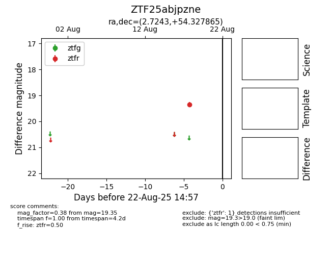

Target ZTF25abjpzne at 2025-08-22 15:31, see:
FINK: fink-portal.org/ZTF25abjpzne
Lasair: lasair-ztf.lsst.ac.uk/objects/ZTF25abjpzne
ALeRCE: alerce.online/object/ZTF25abjpzne
alt names
ZTF25abjpzne (ztf,alerce)
coordinates:
equatorial (ra, dec) = (2.7243,+54.32787)
galactic (l, b) = (116.9828,-8.07493)
photometry
last ztfr=19.35
1 ztfr detections
